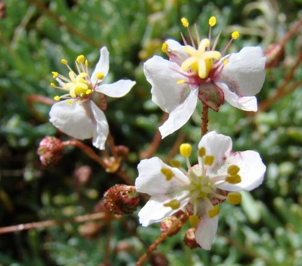

Kewaceae
(No widely accepted common name)
Kewaceae is a small, relatively recently established family of dicotyledonous flowering plants in the order Caryophyllales. It comprises a single genus, Kewa, containing about 8 species of succulent herbs or subshrubs native primarily to southern and eastern Africa, Madagascar, and St. Helena. They are characterized by fleshy leaves, stipules often modified into spines, and flowers typically lacking true petals but having petaloid sepals.
Overview
The Kewaceae family encompasses the single genus Kewa, which was segregated from the genus Hypertelis (formerly in Molluginaceae) based on molecular phylogenetic evidence. The ~8 species are annual or perennial succulent herbs or subshrubs, often found in arid or semi-arid environments, coastal areas, or disturbed ground. Their distribution centers on southern Africa, extending to eastern Africa, Madagascar, and the island of St. Helena.
Plants in this family are recognizable by their somewhat fleshy leaves, which are often covered in glandular hairs. A key feature is the presence of stipules that are frequently modified into persistent spines or bristles, especially noticeable at the nodes. The flowers have prominent, often white or pinkish, petal-like sepals, while true petals are usually absent or minute. Kewaceae plants contain betalain pigments, characteristic of many families within the Caryophyllales order.
Economically, the family has no major importance, though some species might be encountered in specialist succulent plant collections. Its significance lies in its distinct phylogenetic position within the Caryophyllales, helping to clarify relationships among families like Molluginaceae, Aizoaceae, and others in this large and diverse order.
Quick Facts
- Scientific Name: Kewaceae Christenh.
- Common Name: (None widely accepted)
- Number of Genera: 1 (Kewa)
- Number of Species: Approximately 8
- Distribution: Southern and Eastern Africa, Madagascar, St. Helena
- Evolutionary Group: Eudicots - Core Eudicots - Superasterids - Caryophyllales
Key Characteristics
Growth Form and Habit
Annual or perennial succulent herbs or subshrubs, often glandular-hairy.
Leaves
Leaves are simple, alternate or appearing fascicled (clustered) or whorled, linear to lanceolate or ovate, somewhat fleshy (succulent). Stipules are present, membranous or often modified into persistent spines or bristles at the nodes.
Inflorescence
Flowers are borne solitarily in leaf axils or in terminal or axillary cymose inflorescences, sometimes appearing umbel-like.
Flowers
Flowers are bisexual and actinomorphic (radially symmetrical). Key features include:
- Perianth: Consists primarily of a single whorl of (4-) 5 (-9) persistent, often petaloid (petal-like) sepals, which are typically white, pinkish, or greenish, sometimes with darker veins. True petals are usually absent or minute and scale-like.
- Androecium: Stamens are usually numerous (5 to many), arising from the base of the ovary or a short hypanthium.
- Gynoecium: Ovary is superior, composed of 3-8 fused carpels, forming either a single locule with basal placentation or 3-8 locules with axile placentation. Styles are distinct or fused at the base, corresponding in number to the carpels.
Fruits and Seeds
The fruit is a loculicidal capsule, opening by valves corresponding to the number of carpels. Seeds are numerous, small, often kidney-shaped or rounded, sometimes with a small aril.
Chemical Characteristics
The family produces betalain pigments (red and yellow pigments found in most Caryophyllales except Caryophyllaceae and Molluginaceae) instead of anthocyanins for coloration.
Field Identification
Identifying Kewaceae (Kewa) involves recognizing its succulent habit, stipular spines, and unique flower structure within the Caryophyllales context:
Primary Identification Features
- Habit: Succulent herbs or subshrubs, often glandular-hairy.
- Leaves: Alternate or clustered, fleshy, simple.
- Stipules: Present and often modified into persistent spines or bristles at the nodes.
- Flowers: Radially symmetrical, with 5 (or more) petaloid sepals (often white/pink).
- Petals: Usually absent or minute.
- Stamens: Numerous (5-many).
- Ovary Position: Ovary is superior.
- Fruit: A dry capsule.
Secondary Identification Features
- Pigments: Presence of betalains (though not easily visible without chemical test).
- Habitat: Often found in dry, sandy, or disturbed habitats in Africa/Madagascar/St. Helena.
- Placentation: Basal or axile.
Seasonal Identification Tips
- Flowering Season: Varies with species and rainfall patterns in their native habitats. Flowers can be relatively conspicuous due to the petaloid sepals.
- Fruiting Season: Dry capsules develop after flowering.
- Vegetative State: The combination of succulent leaves and stipular spines/bristles is characteristic.
Common Confusion Points
Kewa might be confused with members of other families within Caryophyllales, particularly those with succulent habits or similar flower structures:
- Molluginaceae: The family from which Kewa was segregated. Molluginaceae typically lack betalains (having anthocyanins instead) and often have fewer stamens and different stipule types (if present).
- Aizoaceae (Ice Plant family): Many are highly succulent. Flowers often have numerous staminodes that resemble petals, surrounding numerous true stamens, and the fruit is often a hygrochastic capsule (opening when wet). Usually lack stipular spines.
- Portulacaceae (Purslane family): Succulent herbs, often with only 2 sepals (though sometimes more), usually 4-6 petals (present), and a circumscissile capsule.
- Caryophyllaceae (Carnation family): Usually non-succulent herbs with opposite leaves, swollen nodes, flowers typically with 5 notched petals, and capsules opening by teeth. Lack betalains.
- Cactaceae (Cactus family): Highly succulent, but typically stem succulents with leaves reduced to spines borne on areoles. Flowers have numerous tepals and stamens, and an inferior ovary.
Field Guide Quick Reference
Look For:
- Succulent herbs/subshrubs
- Leaves alternate/clustered, fleshy
- Stipular spines/bristles present
- Flowers with petaloid sepals
- Petals absent or minute
- Numerous stamens
- Superior ovary
- Fruit a capsule
Key Variations:
- Sepal color (white, pink, green)
- Stamen number
- Degree of succulence
- Habit (annual vs. perennial)
Notable Examples (Genus Kewa)
The family contains only the genus Kewa.

Kewa caespitosa
(Formerly Hypertelis caespitosa)
A small, cushion-forming perennial succulent found in southern Africa (e.g., Namibia, South Africa). Has dense clusters of linear, fleshy leaves and small white flowers with petaloid sepals. Stipules are bristle-like.

Kewa acida
(St. Helena Kewa)
Endemic to the island of St. Helena. A somewhat woody subshrub with fleshy leaves and prominent stipular spines. Flowers have white or pinkish petaloid sepals.

Kewa bowkeriana
(Formerly Hypertelis bowkeriana)
Found in southern and eastern Africa. An annual or perennial herb, often glandular-hairy, with linear succulent leaves and stipular bristles. Flowers have white/pinkish petaloid sepals.
Phylogeny and Classification
Kewaceae is placed in the large and diverse order Caryophyllales, which belongs to the Superasterid clade of core eudicots. This order is notable for containing many families adapted to arid environments and for the prevalence of succulence and unique pigment chemistry (betalains).
The establishment of Kewaceae resolved the phylogenetic uncertainty surrounding the genus Kewa (previously part of Hypertelis in Molluginaceae). Molecular studies show that Kewa forms a distinct lineage that is sister to a clade comprising several other Caryophyllales families, including Molluginaceae, Aizoaceae, Cactaceae, Portulacaceae, Amaranthaceae, and Caryophyllaceae, among others. Its exact position relative to these core Caryophyllales families is still an area of active research, but it represents one of the distinct lineages within this major order.
Position in Plant Phylogeny
- Kingdom: Plantae
- Clade: Angiosperms (Flowering plants)
- Clade: Eudicots
- Clade: Core Eudicots
- Clade: Superasterids
- Order: Caryophyllales
- Family: Kewaceae
Evolutionary Significance
Kewaceae, though small, is significant for understanding Caryophyllales evolution:
- Phylogenetic Resolution: Its recognition helps clarify relationships within the core Caryophyllales, separating this lineage from Molluginaceae.
- Character Evolution: Exhibits a combination of features found in Caryophyllales, such as succulence, stipular spines, betalain pigments, and often absent petals, providing insights into the evolution of these traits.
- Adaptation to Aridity: Represents another lineage within Caryophyllales that has adapted to dry or saline environments through succulence.
- Biogeography: Its distribution primarily in Africa and Madagascar adds to the understanding of the historical biogeography of the Caryophyllales order.